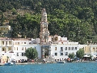

|
|
|
>> DODEKANY / RHODES 2013 <<
W sobotê 31 sierpnia 2013 skoro œwit wyl¹dowalismy na Rodos. Mandraki powita³o nas piêknym s³oñcem i ca³kiem wietrzn¹ pogod¹.
Ku zaskoczeniu wszystkich Bavaria 46 C sta³a gotowa do przejêcia, ale to nie u Greków, ostatecznie dostaliœmy Ocean Star 51,2 wiêksza, wygodniejsza i szybsza.
Wieczorem za³ogi wszystkich czterech ³ódek by³y w komplecie.
Gotowi do wyjscia byliœmy w niedzielê rano i trzeba by³o siê szybko zwijaæ, poniewa¿ Kapitanat Portu zapowiedzia³, ¿e po 12:00 nikogo nie wypuszcza, poniewaz nadchodzi wiatr ponad 6B.
Po wyjœciu z Mandraki poszliœmy NEE pod brzegi Turcji, aby zmieniæ hals na docelowy kierunek - zachód. PóŸnym popo³udniem dotarliœmy do wyspy Simi i stanêliœmy na kotwicy w zatoczce
Panormitis. 
powrót > Rejsydowcipy ¿eglarskie
|
Copyright © by JoMiRo 2001-2013 >> nowa ods³ona << Goœcie: |